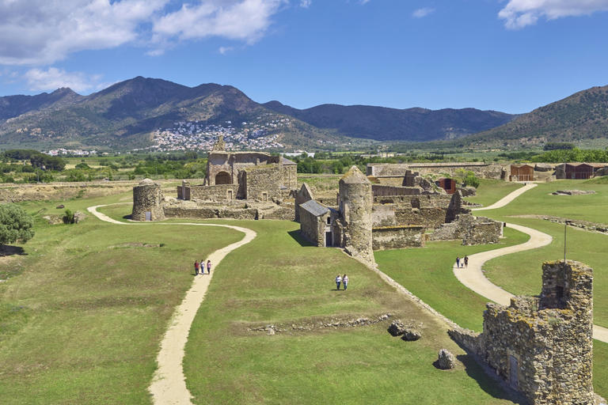

Visita · Roses
(Segle IV aC - Segle XIX) Bé Cultural d’Interès Nacional És imprescindible recórrer el perímetre de la Ciutadella per aquells qui visiten Roses. Declarada conjunt historicoartístic l'any 1961,…